Non-Parametric models
- known as the “product-limit” estimator. The most used survival analysis method
- makes no parametric assumption on the data

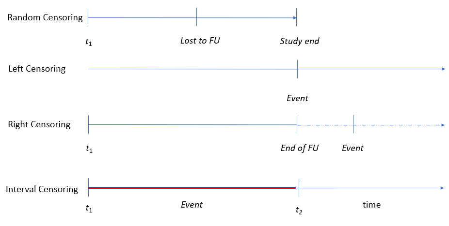
The case where survival time is dependent with whatever causes the censoring. Example: A patient in a community study is censored because they are hospitalized (hospitalization indicates severity)
In most of the examples throughout we will make the assumption of non-informative censoring
survival to time \(T\): the random variable capturing time since the beginning of the event.
Survival: the probability of not experiencing an event unit some time \(t\) \(S(t) = Pr(T >t) = 1- Pr(T \leq t)\)
Cumulative density function:
\(F(t) = Pr(T \leq t)\)
\(F(t) = 1 - S(t)\)
turns out \(h(t) = \frac{f(t)}{S(t)}\)
as well as \(S(t) = e^{-H(t)}\)
\(H(t) = \lambda t\)
\(S(t) = exp(-\lambda t)\)
\(f(t) = \lambda exp(-\lambda t)\)
Weibull , gamma, lognormal etc…
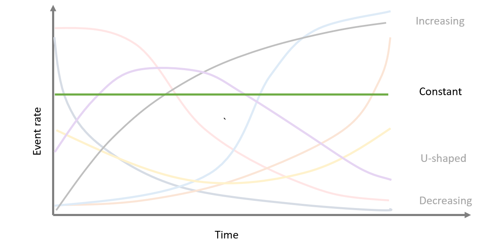
## Call: survfit(formula = Surv(time, status) ~ x, data = aml)
##
## x=Maintained
## time n.risk n.event survival std.err lower 95% CI upper 95% CI
## 9 11 1 0.909 0.0867 0.7541 1.000
## 13 10 1 0.818 0.1163 0.6192 1.000
## 18 8 1 0.716 0.1397 0.4884 1.000
## 23 7 1 0.614 0.1526 0.3769 0.999
## 31 5 1 0.491 0.1642 0.2549 0.946
## 34 4 1 0.368 0.1627 0.1549 0.875
## 48 2 1 0.184 0.1535 0.0359 0.944
##
## x=Nonmaintained
## time n.risk n.event survival std.err lower 95% CI upper 95% CI
## 5 12 2 0.8333 0.1076 0.6470 1.000
## 8 10 2 0.6667 0.1361 0.4468 0.995
## 12 8 1 0.5833 0.1423 0.3616 0.941
## 23 6 1 0.4861 0.1481 0.2675 0.883
## 27 5 1 0.3889 0.1470 0.1854 0.816
## 30 4 1 0.2917 0.1387 0.1148 0.741
## 33 3 1 0.1944 0.1219 0.0569 0.664
## 43 2 1 0.0972 0.0919 0.0153 0.620
## 45 1 1 0.0000 NaN NA NAWe can use a non parametric test to understand if group A lives longer than group B
long-rank test: is the difference in survival times statistically different?
relying on a \(\chi^2\) distribution
## Call:
## survdiff(formula = Surv(time, status) ~ x, data = aml)
##
## N Observed Expected (O-E)^2/E (O-E)^2/V
## x=Maintained 11 7 10.69 1.27 3.4
## x=Nonmaintained 12 11 7.31 1.86 3.4
##
## Chisq= 3.4 on 1 degrees of freedom, p= 0.07
\(h(t) = h_0(t)exp(X\beta)\) where \(h_0(t)\) is estimated non-parametrically
Notice that the effect of the covariates is proportional on the baseline hazard..(that’s why “proportional hazard” model)
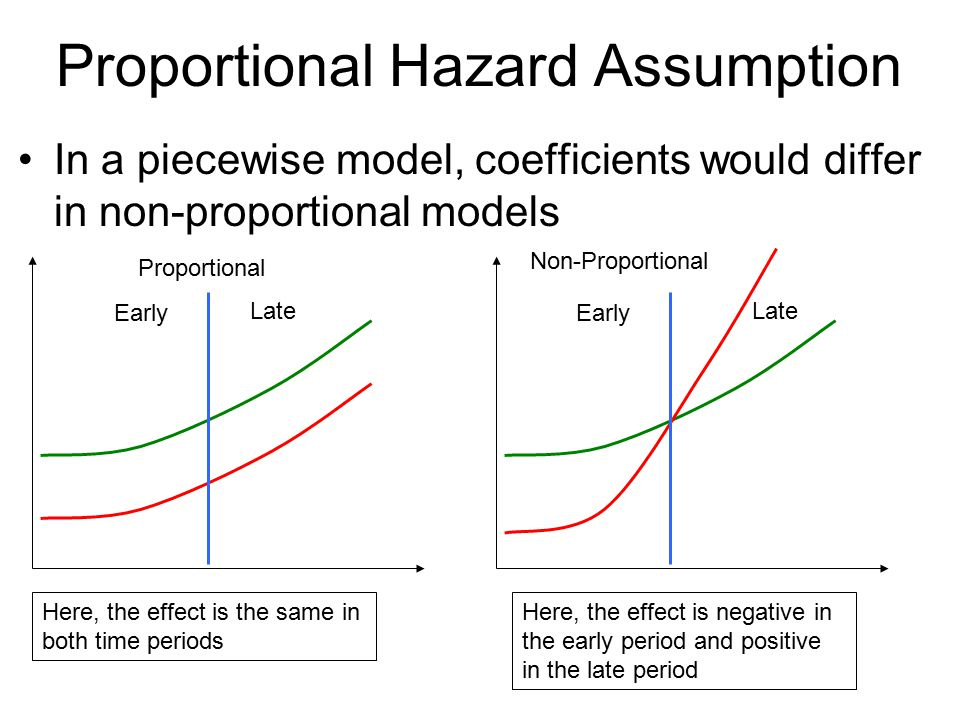 source:https://altis.com.au/a-crash-course-in-survival-analysis-customer-churn-part-iii/
The assumption can be assessed number of ways : visually 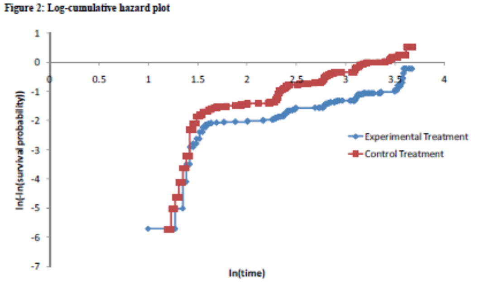 http://nicedsu.org.uk/wp-content/uploads/2016/03/NICE-DSU-TSD-Survival-analysis.updated-March-2013.v2.pdf
Testing the non-zero slope of the Schoenfeld residuals
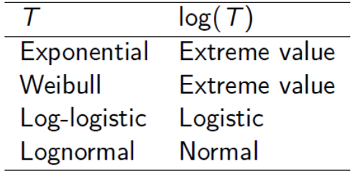
Likelihood based metrics
Akaike Information Criterion (AIC)
Bayesian Information Criterion (BIC)
Performance based metrics
Sensitivity , Specificity
(time dependent) Receiver Operating characteristic (ROC) curve
Area Under the Curve (AUC)
c- statistic
Latimer et al 2011 (DSU 14)
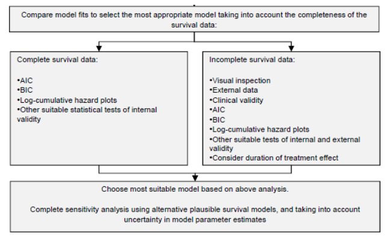
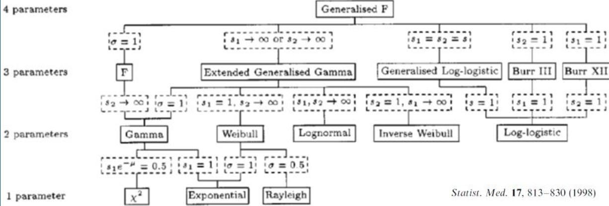
Gibson et al (Pharmacoeconomics, 2017)

From Gibson et al (Pharacoeconomcs, 2017)
Spline-based models using a limited number of knots can provide an acceptable fit to trial data and generate extrapolated estimates supported by longer term evidence, with results that are stable in response to changes in knot placement.
Modeler faced with more decisions: - Extrapolate using KM and “fitted” tails - Extrapolate using the fitted curve
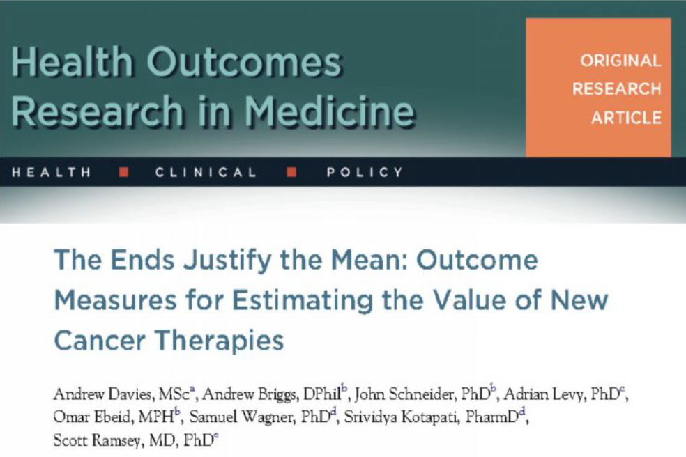
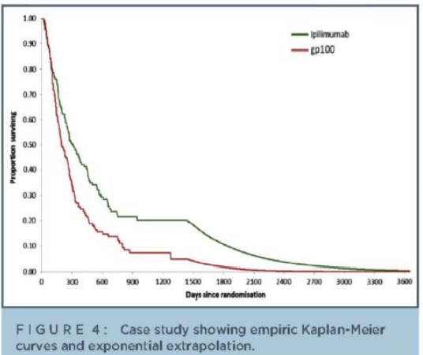
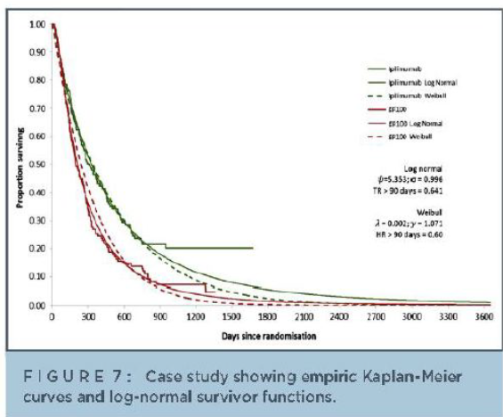
Drummond, et al (2015). Methods for the economic evaluation of health care programmes. Oxford university press.
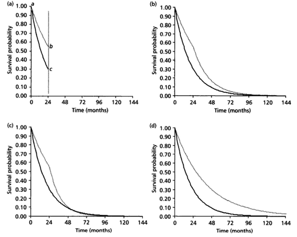